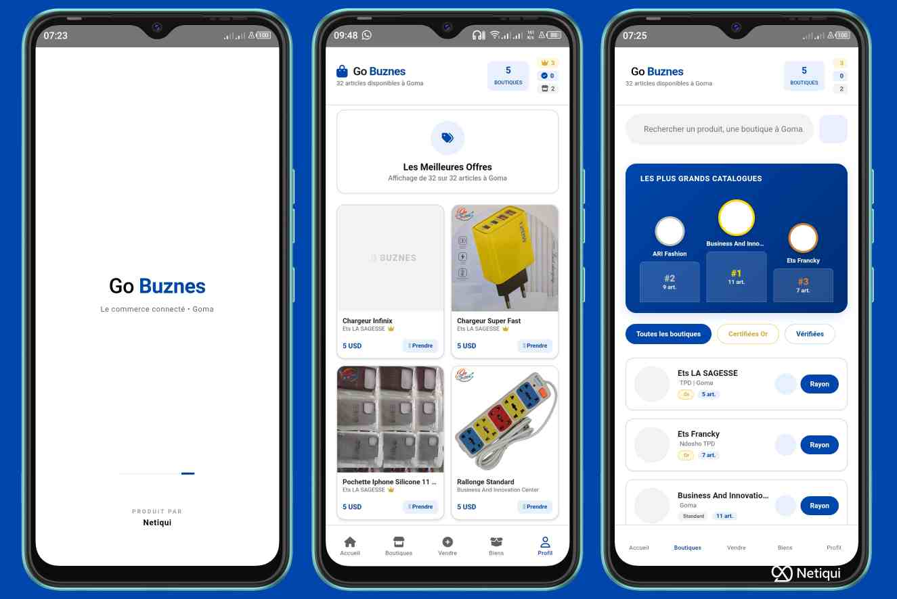

Je suis Christian CHIRUZA M., Fondateur de Netiqui et concepteur dee Go Buznes. Mon parcours est celui d'un passionné de technologie et d'un entrepreneur convaincu que le numérique peut transformer notre région. J'ai vu trop de commerçants, artisants et jeunes entrepréneur talenteux rester invisible faute d'outils adaptés, c'est pour eux que j'ai conçu Go Buznes.
Go Buznes n'est pas une expérimentation ni une ilusion générée par une intelligence artificel, c'est une plateforme réelle, pensée et dévellopée ici à Goma, avec une équipe locale et une vision claire : donner aux commerçants du Nord-Kivu un marché en ligne, fiable, accessible et sans commission.

Pourquoi Go Buznes existe
- Supprimer les barrières : Permettre à chacun de créer une boutique en ligne gratuitee, sans compétences techniques
- Proteger les revenus : Zéro commision, les vendeurs gardent 100% de leurs ventes
- Renforcer la confiance : Badges or et bleu pour distinguer les vendeurs serieux et inspirer les acheteurs
- Valoriser le local : Une vitrine numériquue qui met en avant les produits et talents de notre région
Les avantages pour les commerçants
Avec Go Buznes, un vendeur des vêtements peut ouvrir sa boutique en quelques minutes et toucher des clients bien au delà de son quartier. Un artisant peut mettre ses créations et gagner en crédibilité grâce aux badges de visibilité. Un entrepreneur peut tester de nouveaux produit sans risque financier, car la plateforme ne prélève aucune commission.
Une vision tournée vers l'avenir
Go Buznes est conçu pour évoluer, Nous travaillons déja sur :
- Integrations des paiements locaux pour faciliter les transactions
- Partenariat logistique afin de faciliter la livraison
- Formation en marketing digital pour renforcer les compétences des vendeurs
- Programmes d'accompagnement pour soutenir le commerçant à fort potentiel
Un Projet Serieux et Crédible
Je sais que beaucoup de projet numérique suscitent la méfiance. Mais Go Buznes est différent : - Nous commes basés à Goma, accessibles et transparent - Nous ne cachions rien : pas de frais, pas de commissions - Nous offront un support humain, réel, pour accompagner chaque vendeur - Nous construisons un écosystème durable, pené pour les réalités locales
Go Buznes n'est pas une promesse vide. c'est une solution concrete, déjà en action, qui donne aux commerçants du Nord-Kivu la liberté de vendre, de grandir et de s'imposer dans le monde numérique
Je suis Christian CM, et je vous invite à rejoindre cette avanture. Ensemble faison du Kivu un acteur majeur en commerce digital.